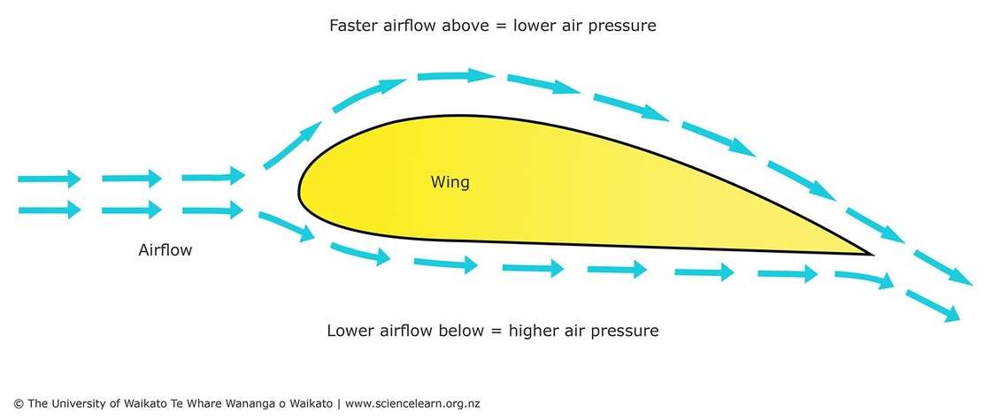

1. Teoría: Los Secretos del Viento
El Principio de Bernoulli
Daniel Bernoulli, un matemático brillante, descubrió algo contraintuitivo: cuando un fluido (como el aire) se mueve más rápido, su presión disminuye.
Si diseñamos un aspa (perfil alar) con una curva en la parte superior y más plana en la inferior, el aire que viaja por arriba tiene que recorrer más distancia en el mismo tiempo, por lo que acelera. Esto crea una zona de baja presión arriba, y la alta presión de abajo empuja el aspa hacia arriba. A esta fuerza "mágica" le llamamos Sustentación (Lift).

Sustentación vs. Arrastre
En el diseño de aerogeneradores, lidiamos con dos fuerzas principales:
- Arrastre (Drag): Es la resistencia. El viento choca contra una superficie y la empuja. Es fuerza bruta, pero lenta e ineficiente.
- Sustentación (Lift): Es la fuerza de Bernoulli. Permite que las aspas giren mucho más rápido que la velocidad del viento mismo. Es elegancia pura.
Tipos de Rotores
SAVONIUS: Usa Arrastre. Parece un barril partido a la mitad. Gira lento, tiene mucha fuerza (torque), pero baja eficiencia.
HÉLICE / DARRIEUS: Usa Sustentación. Son las turbinas modernas de 3 aspas. Giran rapidísimo y son altamente eficientes.
2. Práctica: Simulación de Perfiles Alares
Demostraremos físicamente que la curvatura genera sustentación al soplar aire, desafiando la intuición común.
El Material: Corta una tira de papel de unos 5 cm de ancho y 20 cm de largo.
La Postura: Sostén la tira de papel justo debajo de tu labio inferior. Verás que el papel cuelga hacia abajo por la gravedad.
La Magia de Bernoulli: Sopla fuerte por encima del papel (no por debajo). Observa cómo el papel se levanta desafiando la gravedad.
3. Evaluación de Conocimientos
Consolida tu aprendizaje arquitectónico de los fluidos.